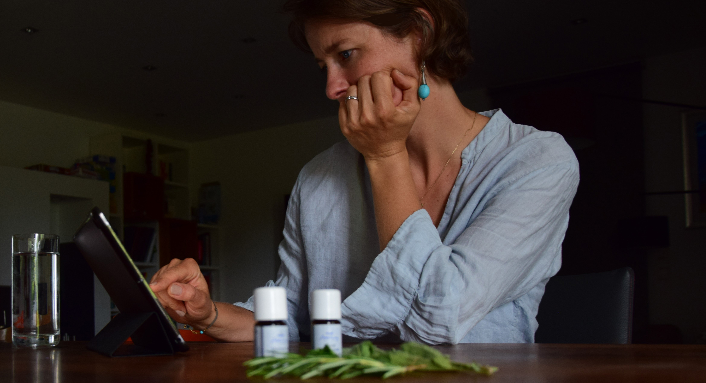

Über mich

Certified Member VAGA
Schon früh habe ich gespürt, wie kraftvoll das Zusammenspiel von Körper, Geist und
Natur ist. Nach meiner Ausbildung zur Aromatherapeutin durfte ich viele
Menschen auf ihrem Weg zu mehr Ruhe, Ausgeglichenheit und Selbstwahrnehmung begleiten.
Ich liebe es, Duftkreationen und Raumbeduftungen zu gestalten. Die
faszinierende Verbindung zwischen Riechorgan und Gehirn macht meine Arbeit so besonders: In meiner
individuellen Beratung steht der Mensch mit seinen Bedürfnissen im Mittelpunkt. Jedes
Ergebnis ist einzigartig und genau auf die jeweilige Situation abgestimmt: erdend, stärkend und inspirierend.
Angebot

Mein Angebot richtet sich an alle, die achtsam leben und ihre innere Balance stärken
wollen. Mit natürlichen Essenzen, richtig und individuell dosiert.
Aromatherapie
Ich biete Duftdesigns für Büros, Schulen, Kindergärten oder in den eigenen vier Wänden an. Virenlast zu
reduzieren, konzentrationsfördernde Düfte oder einfach das Wohlfühlklima zu erhöhen sind mögliche
Zielsetzungen eines Duftkonzeptes. Auch eine individuelle Aromaberatungen ist Teil meiner Arbeit.
Weiters biete ich Workshops zum Thema Aromatherapie an.
Yoga
In meinen Yogastunden setze ich die Duftessenzen fokussiert ein, um eine harmonische Balance zwischen
Anstrengung und Entspannung zu schaffen.
Erfahrungen
Was andere über meine Arbeit sagen:
"Ich bin Ärztin für Allgemeinmedizin und genieße regelmäßig die Yoga-Abende mit
Stephanie - kräftigend,
belebend, entspannend, in sehr angenehmer Atmosphäre. Begleitet von Düften der Aromatherapie, die ich
mittlerweile
auch gerne zu Hause verwende."
Sylvia
Ärztin aus Baden
"Nach einer ausführlichen Beratung habe ich mich für eine individuelle
Duftkomposition
für meine Praxis entschieden. Der Duft trägt spürbar zur Entspannung meiner Patient:innen bei.
Auch mir hilft er, mich noch besser zu fokussieren und mich vollständig auf jede Behandlung einzulassen."
Katrin
Physiotherapeutin aus Bad Vöslau
"Die Kombination von Aroma Düften, Yoga und dem schönen Gewölbe sind eine
Wohltat für Seele,
Geist und Körper. Unsere Trainerin hat nicht nur eine beruhigende Aura, sondern
geht auch auf die Wünsche ein und gestaltet so jede Yoga-Einheit individuell."
Rosi
Assistentin aus Baden
"Für unser Büro hat Stephanie ein individuelles Duftkonzept entwickelt. Die
Konzentration im Team ist spürbar besser geworden und das Raumklima hat sich deutlich verbessert. Vielen
Dank für die professionelle Beratung!"
Thomas
IT-Projektmanager aus Wien
"Der Aromatherapie-Workshop war unglaublich informativ und praxisnah. Stephanie
erklärt alles sehr verständlich und mit viel Leidenschaft. Ich nutze die Öle jetzt selbstbewusst im Alltag
und bin begeistert von der Wirkung."
Claudia
Lehrerin aus Mödling
Kontakt

Möchtest du mehr erfahren oder eine Aromaberatung buchen?
hallo@stephanie-auer.com
Bad Vöslau
@auerstephanie4
Impressum
Offenlegungspflicht laut §25 Mediengesetz und Informationspflicht laut §5 E-Commerce Gesetz (ECG).
Medieninhaberin & Herausgeberin
Mag. Stephanie Auer
Dr.-Walter-Gebhart-Gasse 9
2540 Bad Vöslau
Österreich
Kontakt
E-Mail: hallo@stephanie-auer.com
Telefon: +43 699 117 785 23
Web: www.stephanie-auer.com
Berufsrechtliche Angaben
Unternehmensgegenstand: Humanenergetik (Aromatherapie)
Mitgliedschaft bei der Wirtschaftskammerorganosation: WKO, WKNÖ, VAGA - Österreichische Berufsgruppenvereinigung für Aromapflege und gewerbliche Aromapraxis
Berufsrecht: Gewerbeordnung
Aufsichtsbehörde: Bezirkshauptmannschaft Baden
Berufsbezeichnung: diplomierte AromapraktikerIn (MAScent ® | PROFESSIONAL, Master of Aromapractice)
Datenschutzerklärung
Diese Website setzt keine Tracking-Cookies und verwendet keine externen Schriftbibliotheken (Google Fonts)
oder eingebettete Dienste, die personenbezogene Daten ohne Einwilligung übertragen.
Verantwortliche
Mag. Stephanie Auer, Bad Vöslau, Österreich, E-Mail: hallo@stephanie-auer.com
Kontaktaufnahme
Bei Kontakt per E-Mail verarbeite ich die angegebenen Daten zur Beantwortung der Anfrage. Rechtsgrundlage:
Art. 6 Abs. 1 lit. b DSGVO.